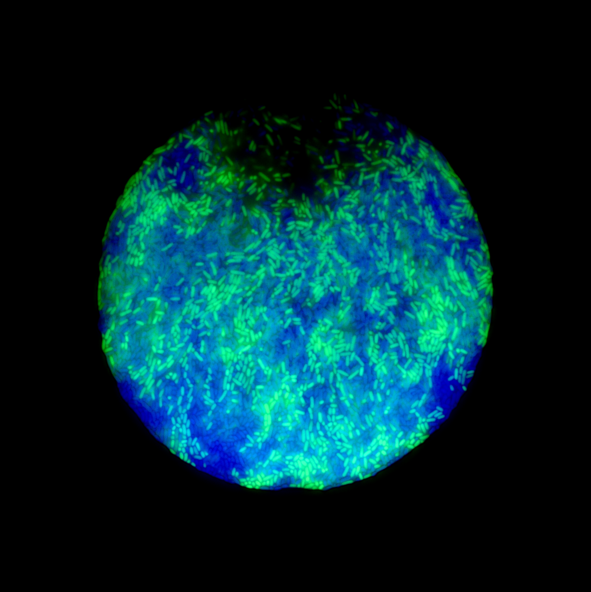
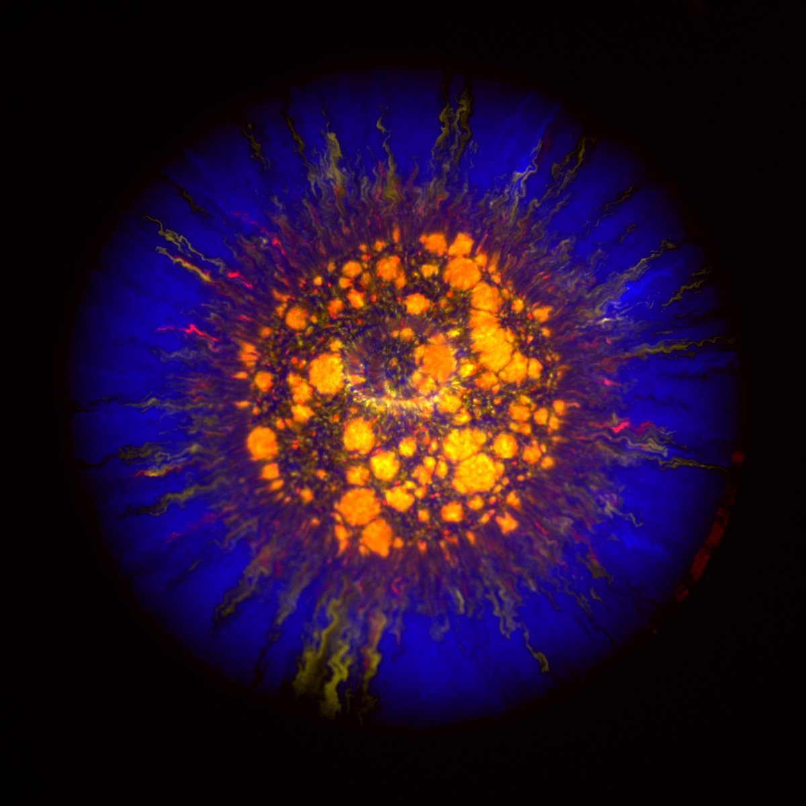
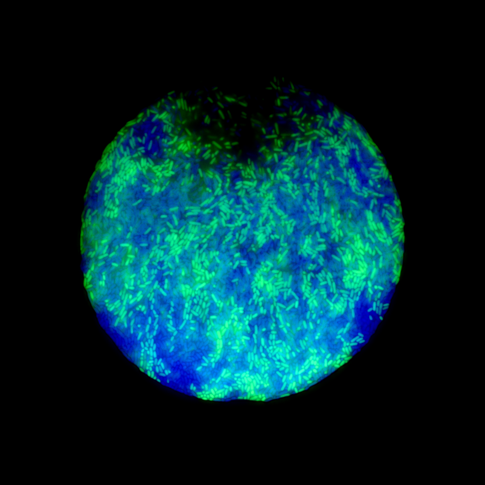
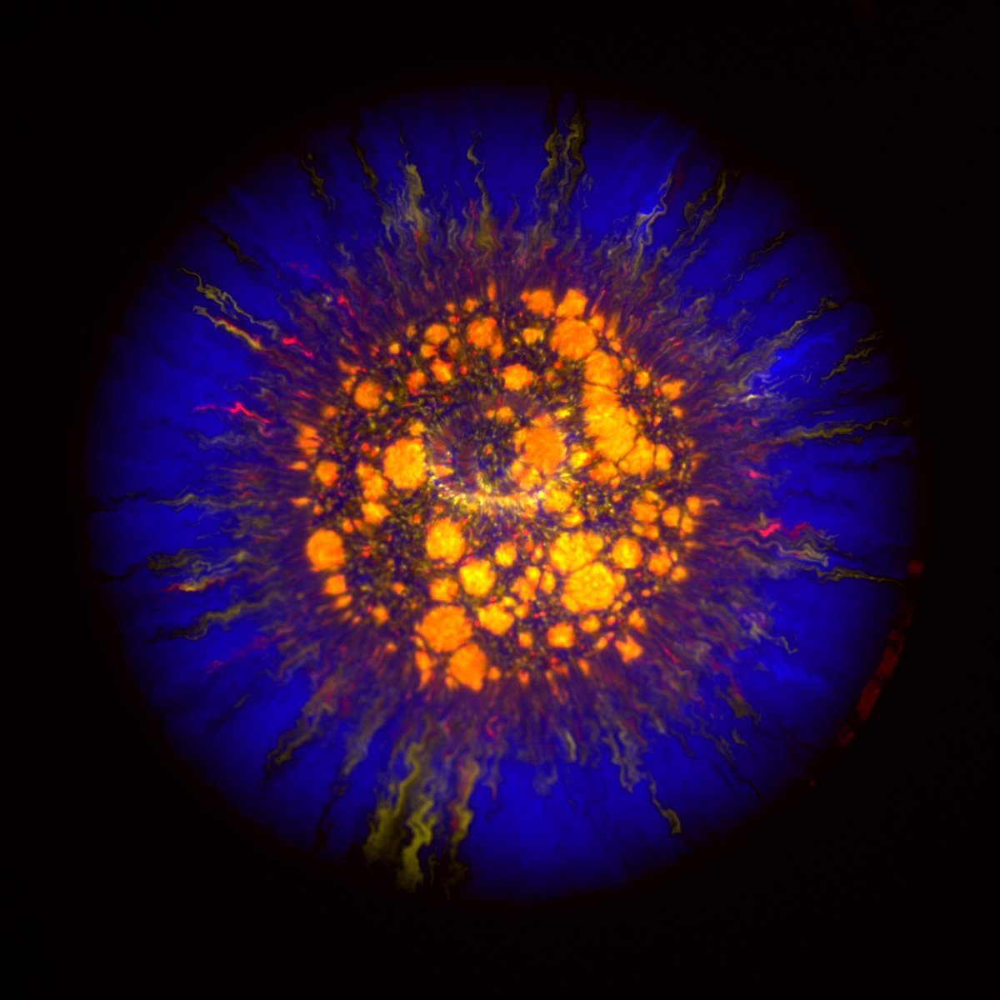
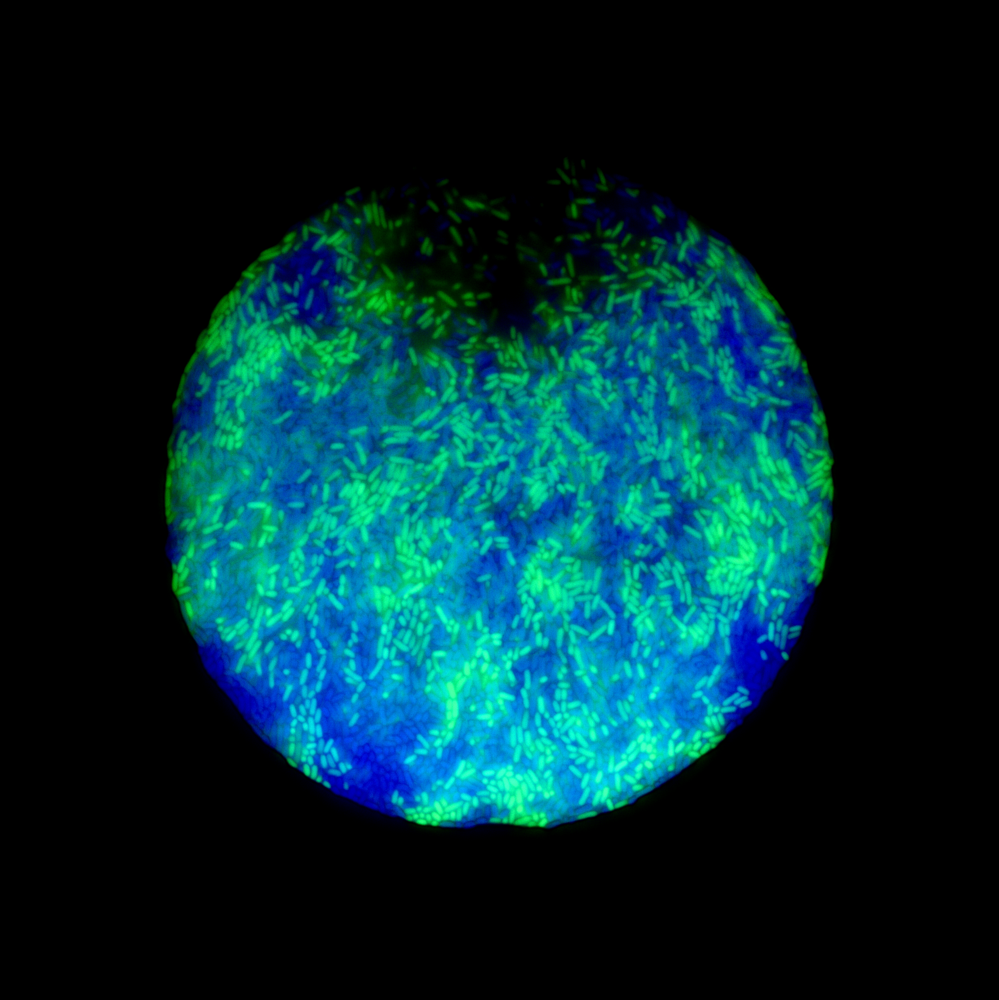
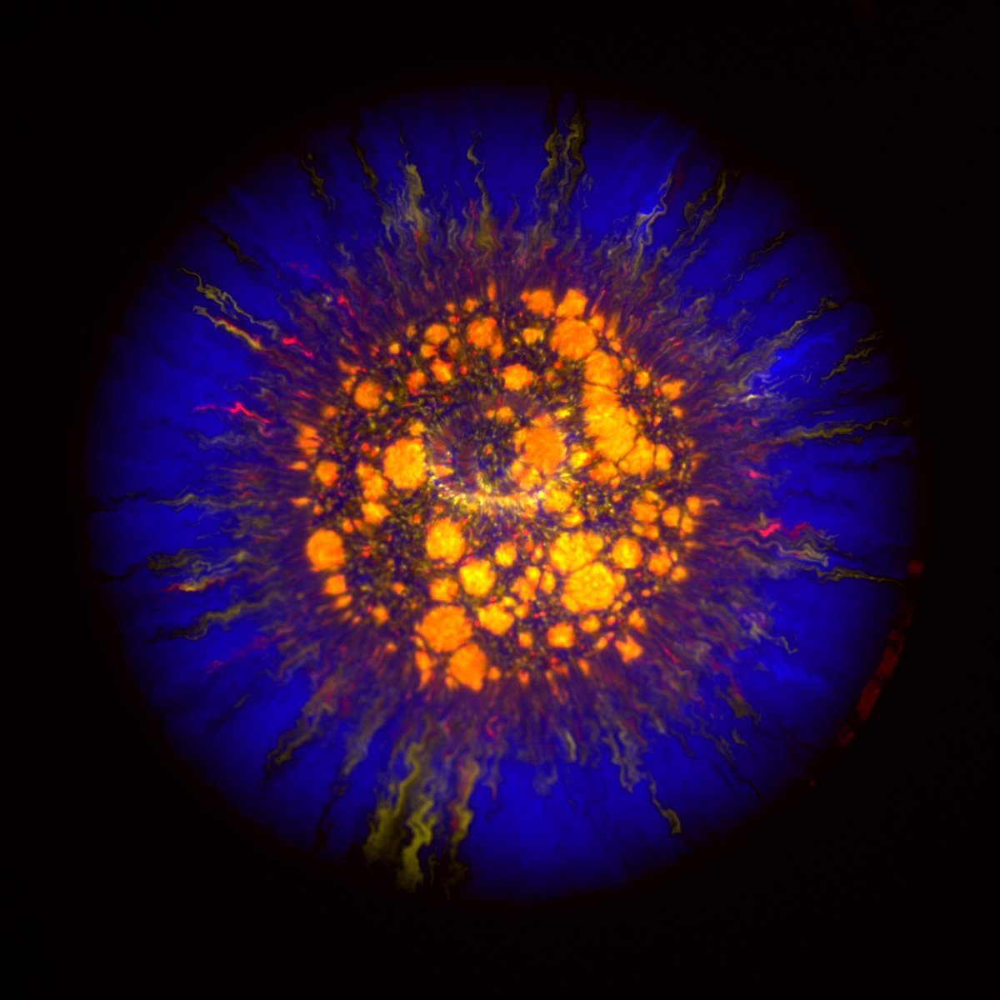

Gallery

 



Explore the microscopic world through images.
I spend most days in a dark microscopy room, sometimes I get nice images. Here they are.


I am a Ph.D. student at the University of Lausanne, Switzerland. I study spatial pattern formation in microbial communities.

Email: estelle.pignon@unil.ch